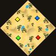
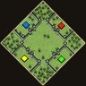
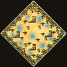
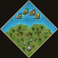
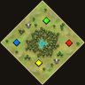
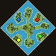
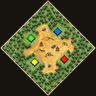
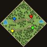

A round-robin tournament of teams of 4-6 players, mostly formed from national regions
(plus one platform-based team, PS5). Each team plays a series against every other team —
one set each of 1v1, 2v2, 3v3, and 4v4.
Prize Pool: $200Round Robin · 1v1 / 2v2 / 3v3 / 4v46 TeamsStart: October 10thOrganized by Worst Underwear
📜 Official Rules start Oct 10 · full rulebook in English and Spanish
AOE2 Nations Cup — Official Rules
Start Date: October 10th · Duration: 2-3 weeks
This tournament is focused on the top players from each nation to see which nation reigns
supreme. Each nation will play each other in a round robin style — a play-all format with a
1v1, a 2v2, a 3v3, and a 4v4. Each team will have between 4 and 6 players; players can be used
more than once per round. There will be a civ draft and a map draft — civs and maps cannot be
repeated during each round. A 1v1 is worth 1 point, 2v2 worth 2, 3v3 worth 3, and 4v4 worth 4.
The two nations with the highest scores after the round robin phase face each other in the
finals; 3rd and 4th place face each other for a 3rd place match.
1) Eligibility & Platform Rules
Controller only — keyboard and mouse gameplay is not allowed.
Players may not be in a party with anyone other than their teammates during official games.
Players must appear online while playing tournament matches (must be verifiable).
Discord nickname must closely match Gamertag for scheduling clarity.
At least 1 person per team must be in the Discord.
2) Conduct & Fair Play
All participants must maintain respectful and cooperative behavior.
Griefing is not allowed (hiding units, excessive pausing, intentional AFK, artificial delays).
Coaching from third parties during games is not allowed.
Admins reserve the right to disqualify players for cheating or unsportsmanlike conduct.
Sling — you must be in Imperial Age to sling.
3) Sign-ups
Participants sign up individually. If more than 6 players sign up for a nation, that nation's
own players decide who makes the final cut.
Teams may use any number of players multiple times per round, to facilitate swift games and
scheduling.
Player timezone, average play time, and prior tournament participation are taken into
consideration. A player who stops actively participating can be replaced.
Substitutes are allowed if judged of equal or less skill than the player they're replacing —
judged by the admins, who have full control of what's chosen.
4) Format
Round Robin. Games are played on weekends starting the weekend of October 10th, 2026 —
can be played during the week if both teams are willing and able.
Tournament should run for a total of 2-3 weeks.
Teams that don't make a concerted effort to play their games will be disqualified pending
admin review.
5) Scheduling
Starting schedules are released by admins once signups are complete.
It's up to the teams to schedule the specific date and time of their set.
Teams must be available during the day at least 2 weekends during the tournament period,
with 1 week identified at the beginning — to allow scheduling with overseas players.
Cancellations within 24 hours must be rescheduled within 7 days.
Cancellation notice must be given 8h prior to playtime to avoid forfeiting (unless the other
team agrees to reschedule) — exceptions at admin discretion.
If rescheduled into a new week, two sets need to be played that week.
Admins may award full points to a team if the opposing team doesn't show scheduling effort.
Each game of a series (1v1, 2v2, 3v3 and 4v4) is played on one map.
Before each series, each team bans 1 map. A team can ban a different map against each opponent.
The 1v1 map is chosen at random. After that, the loser of each game picks the map for the next game.
A map draft and civ draft are held by a chosen representative from each team — maps and
civs cannot be repeated during a series.
7) Prize Pool
Starts at $200. Donations are encouraged and sent out by Old Peenuts to the winning team —
reach out to Old Peenuts directly to donate.
8) Disconnects & Restarts
Teammates must pause immediately on disconnect.
Before minute 5 → full restart. After minute 5 → restore from save.
Maximum pause: 5 minutes (can be longer if both teams agree).
Two disconnects by the same team = game loss.
Restored games require at least one POV stream per team.
9) Game Settings
Game mode: Random Map. Settings standard with ranked online play. Civilizations hidden in
lobby setup.
10) Spectator Settings
Games must be public, spectators enabled, exactly 2-minute spectator delay required.
If not public/visible when detected by an admin → immediate restart.
11) Admin Authority
Admins have final say in disputes. All decisions prioritize fairness and simplicity.
AOE2 Nations Cup — Reglas oficiales
Fecha de inicio: 10 de octubre · Duración: 2-3 semanas
Este torneo se centra en los mejores jugadores de cada nación para determinar cuál de ellas se alza
como la mejor. Las naciones se enfrentarán entre sí en un formato de todos contra todos
(round-robin), con partidas 1v1, 2v2, 3v3 y 4v4. Cada equipo contará con entre 4 y 6
jugadores, y los jugadores pueden participar en más de una partida por ronda. Habrá un proceso de
selección (draft) tanto de civilizaciones como de mapas, y no se pueden repetir
civilizaciones ni mapas dentro de una misma ronda. Las partidas 1v1 otorgan 1 punto; las 2v2,
2 puntos; las 3v3, 3 puntos; y las 4v4, 4 puntos. Las dos naciones con mayor puntuación tras la
fase de todos contra todos se enfrentarán en la final, y las que ocupen el tercer y cuarto puesto
jugarán un partido por el tercer lugar.
1) Elegibilidad y reglas de plataforma
Solo se permite el uso de mando (controlador). No está permitido jugar con teclado y ratón.
Los jugadores no pueden estar en un grupo (party) con personas ajenas a su equipo
durante las partidas oficiales.
Los jugadores deben aparecer como "en línea" mientras disputan los partidos del torneo (esta
regla debe ser verificable).
El apodo en Discord debe coincidir estrechamente con el Gamertag para facilitar la
programación de los encuentros.
Al menos una persona por equipo debe estar presente en el servidor de Discord.
2) Conducta y juego limpio
Todos los participantes deben mantener un comportamiento respetuoso y colaborativo.
No se permite el comportamiento disruptivo o malintencionado (griefing), como esconder
unidades, pausar excesivamente, ausentarse intencionadamente (AFK) o provocar retrasos
artificiales.
No se permite recibir asesoramiento externo (coaching) durante las partidas.
Los administradores se reservan el derecho de descalificar a jugadores por hacer trampas o
mostrar una conducta antideportiva.
Sling (transferencia de recursos): debes estar en la Edad Imperial para hacer un sling.
3) Inscripciones
Los participantes se inscribirán de forma individual. Si más de 6 jugadores se inscriben por
una misma nación, serán los propios jugadores de dicha nación quienes decidan quiénes formarán
parte del equipo definitivo.
Se permite que los jugadores participen en múltiples partidas por ronda para agilizar el
desarrollo del torneo y la programación de los encuentros.
Se tendrán en cuenta la zona horaria del jugador, su tiempo de juego habitual y su
participación previa en torneos. Si un jugador deja de participar activamente en el torneo,
puede ser sustituido.
Se permiten sustitutos siempre que se considere que tienen un nivel de habilidad igual o
inferior al del jugador al que reemplazan. Esta evaluación corre a cargo de los administradores,
quienes tienen plena autoridad sobre la decisión final.
4) Formato
Sistema de todos contra todos (round robin). Los partidos se jugarán los fines de
semana, comenzando el fin de semana del 10 de octubre de 2026. También se pueden jugar partidos
entre semana si ambos equipos están dispuestos y pueden hacerlo.
El torneo tendrá una duración total de 2 a 3 semanas.
Los equipos que no hagan un esfuerzo real por jugar sus partidos serán descalificados, sujeto a
revisión por parte de los administradores.
5) Programación
Los administradores publicarán los horarios iniciales una vez finalizadas las inscripciones.
Corresponde a los equipos acordar la fecha y hora específicas de su serie de partidas.
Los equipos deben estar disponibles durante el día al menos dos fines de semana durante el
periodo del torneo, debiendo identificar una de esas semanas al inicio del mismo. Esto es para
facilitar la coordinación con jugadores de otras regiones.
Las cancelaciones realizadas con menos de 24 horas de antelación deben reprogramarse en un
plazo de 7 días.
Se debe avisar de la cancelación 8 horas antes de la hora prevista de juego para evitar perder
la partida por incomparecencia (a menos que el otro equipo acepte reprogramar). Las excepciones
quedan a discreción de los administradores.
Si se reprograma para una nueva semana, el equipo deberá jugar dos series de partidas.
Los administradores pueden otorgar la puntuación completa a un equipo si el equipo rival no
muestra interés en coordinar el horario.
Cada partida de una serie (1v1, 2v2, 3v3 y 4v4) se juega en un solo mapa.
Antes de cada serie, cada equipo veta 1 mapa. Un equipo puede vetar un mapa distinto contra cada rival.
El mapa del 1v1 se elige al azar. Después, el perdedor de cada partida elige el mapa de la siguiente.
Un representante elegido por cada equipo realizará la selección de mapas y civilizaciones. No
se pueden repetir mapas ni civilizaciones durante una misma serie.
7) Bolsa de premios
La bolsa de premios inicial es de 200 $. Se fomentan las donaciones, las cuales serán
entregadas al equipo ganador por Old Peenuts. Cualquier persona que desee donar al torneo puede
contactar directamente con Old Peenuts.
8) Desconexiones y reinicios
Los compañeros de equipo deben pausar la partida inmediatamente si se produce una
desconexión.
Antes del minuto 5 → reinicio completo. Después del minuto 5 → restaurar desde el
archivo guardado.
Pausa máxima: 5 minutos (puede extenderse si ambos equipos están de acuerdo).
Dos desconexiones del mismo equipo = derrota en la partida.
Las partidas reanudadas requieren al menos una transmisión desde la perspectiva del jugador
(POV) por equipo.
9) Configuración de la partida
Modo de juego: Mapa aleatorio. Configuración estándar de partidas clasificatorias en línea.
Civilizaciones ocultas en la configuración de la sala.
10) Configuración de espectadores
Las partidas deben ser públicas, con espectadores habilitados y un retraso de exactamente
2 minutos para los espectadores.
Si la partida no es pública o visible al ser detectada por un administrador, se reiniciará
inmediatamente.
11) Autoridad de los administradores
Los administradores tienen la última palabra en caso de disputas. Todas las decisiones
priorizan la equidad y la simplicidad.
Teams
Rosters go up here as players are confirmed for each region.
Maps
The eight-map pool. Before each series each team bans 1 map, and can ban a different one against each opponent. The 1v1 map is random, then the loser of each game picks the next map.

Arabia

Arena

African Clearing

Pilgrims

Oasis

Migration

Glade

Black Forest
Round Robin Fixtures
Every nation plays every other nation once — series total, each made up of the 4 set formats below. Results get filled in here as matches are played.
Standings
Series record by nation, updated as results come in.
Nations Cup Scouting Report
Six teams. A series is four sets worth 1, 2, 3 and 4 points (10 in all), and teams are ranked by total points.
Built from ranked Console games over the last 12 months (refreshed live on Oct 6, 2026). WOE is wins above what the
rating gap predicts, per 100 games, so a 1700 winning 65% and a 2000 winning 50% both land near zero.
Rosters can be any size, four play at a time, and players can play every set.
Title odds
#
Team
Title odds
Avg finish
Read
1
USA
53%
1.9
Faith2Adventure, sologhost and Donald2O16Trump carry the team sets
2
Canada
19%
2.9
A proven team-set core (GOAT Gobz + Im2Good4YoMoma, 84% in 618 games) that beats expectations on open maps
3
Mexico
10%
3.5
Deepest roster and a proven duo, but no star edge
4
France
9%
3.7
Best chemistry, weak 1v1 (worth 1 point of 10)
5
UK
8%
3.8
A closed-map team that wins least on Arabia and African Clearing
6
PS5
<1%
5.2
Strong in 1v1, rated well behind in the team sets
From 40,000 simulated tournaments using current ratings, recent form against rating, games together, and a light map
ban/pick effect (one ban each per series, a random 1v1 map, then the loser of each game picks). It assumes Faith2Adventure and volcanloup play, ranks Faith2Adventure, sologhost and Donald2O16Trump as USA's top
three and volcanloup as the field's second-best player, and counts known alt accounts with their owner. Treat it as a projection, not a forecast.
Each card proposes a lineup for every set and the map to ban against each opponent and the two best maps to pick after a loss. Before each series each team bans one map (a different one against each opponent), each game is played on one map, the 1v1 map is random, and the loser of each game picks the next map. Bans are the maps where the opponent has the biggest edge, and maps with few games count for less. Lineups are the strongest combination by rating and form. Map advice uses each
team's last 12 months on the eight tournament maps only (40+ games needed to count, 60+ to be picked). Pilgrims and Migration are barely played by anyone, and
Oasis only by a few teams, so they are rarely recommended. Open maps are Arabia, African Clearing, Glade and Oasis; closed maps are Arena, Black Forest, Migration and Pilgrims.
Series win chances
USA
Canada
Mexico
France
UK
PS5
USA
—
70%58 win · 12 tie
76%65 win · 11 tie
75%65 win · 10 tie
77%67 win · 10 tie
88%81 win · 7 tie
Canada
42%30 win · 12 tie
—
63%51 win · 12 tie
63%51 win · 12 tie
65%53 win · 12 tie
80%71 win · 9 tie
Mexico
35%24 win · 11 tie
49%37 win · 12 tie
—
57%44 win · 13 tie
58%46 win · 12 tie
75%64 win · 11 tie
France
35%25 win · 10 tie
49%37 win · 12 tie
56%43 win · 13 tie
—
58%45 win · 13 tie
75%62 win · 13 tie
UK
33%23 win · 10 tie
46%34 win · 12 tie
54%42 win · 12 tie
55%42 win · 13 tie
—
73%62 win · 11 tie
PS5
19%12 win · 7 tie
29%20 win · 9 tie
36%25 win · 11 tie
38%25 win · 13 tie
38%27 win · 11 tie
—
Chance the row team wins or ties the series against the column team (big number), split into win and tie underneath. About 11% of series end 5–5. Shading is by win chance alone.
Key takeaways
The 3v3 and 4v4 are worth 7 of the 10 points, and the 1v1 only 1. The team-set lineups decide the tournament.
USA's odds swing the most. If the stars play, they are strong favorites; if not, the field is wide open.
France, Mexico and UK sit within a few points of each other in most matchups. Small edges decide them.
Maps are a minor factor. The exceptions: PS5 should avoid Arabia, UK African Clearing, Mexico wants African Clearing, and Canada Arabia.
PS5's strength is 1v1 and its weakness is the team sets that pay the most, so it is a long shot.
Average current rating, top 4 players
Team
1v1 Console
1v1 PC
Team Console
Team PC
USA
2,130
1,523
1,829
1,454
Canada
2,044
1,462
1,692
1,451
Mexico
2,094
1,397
1,710
1,398
France
1,842
1,277
1,755
1,386
UK
1,947
1,442
1,721
1,510
PS5
2,022
1,351
1,586
1,285
Current ratings, not peaks. "Top 4" is each ladder's four highest-rated roster players, "Bench" is everyone else with a rating (count in brackets). Inactive players count at their last known rating.
Projected results every set goes to the favorite
Standings
#
Team
W–T–L
Points
1
USA
5–0–0
50
2
Canada
4–0–1
40
3
France
3–0–2
27
4
Mexico
2–0–3
21
5
UK
1–0–4
11
6
PS5
0–0–5
1
Series
Series
Result
Set winners (1v1, 2v2, 3v3, 4v4) and win chance
1v1 head-to-head
Mexico v USA
USA 10–0
USA 59%, USA 63%, USA 64%, USA 65%
UxDora 1–2 Faith2Adventure
Mexico v France
France 9–1
Mexico 84%, France 54%, France 53%, France 52%
UxDora 17–3 x FalKo i
Mexico v Canada
Canada 10–0
Canada 57%, Canada 56%, Canada 54%, Canada 53%
UxDora 0–7 volcanloup
Mexico v UK
Mexico 10–0
Mexico 55%, Mexico 51%, Mexico 52%, Mexico 51%
UxDora 1–0 DarK Slaayer
Mexico v PS5
Mexico 10–0
Mexico 71%, Mexico 61%, Mexico 63%, Mexico 63%
UxDora v ItsGutsAoE: never met in 1v1
USA v France
USA 10–0
USA 88%, USA 59%, USA 61%, USA 63%
Faith2Adventure 2–0 x FalKo i
USA v Canada
USA 10–0
USA 52%, USA 57%, USA 60%, USA 62%
Faith2Adventure 1–4 volcanloup
USA v UK
USA 10–0
USA 64%, USA 64%, USA 66%, USA 66%
Faith2Adventure v DarK Slaayer: never met in 1v1
USA v PS5
USA 10–0
USA 77%, USA 73%, USA 75%, USA 76%
Faith2Adventure v ItsGutsAoE: never met in 1v1
France v Canada
Canada 10–0
Canada 88%, Canada 53%, Canada 51%, Canada 51%
x FalKo i 0–2 volcanloup
France v UK
France 9–1
UK 81%, France 55%, France 55%, France 53%
x FalKo i 0–2 DarK Slaayer
France v PS5
France 9–1
PS5 69%, France 65%, France 66%, France 65%
x FalKo i 1–9 ItsGutsAoE
Canada v UK
Canada 10–0
Canada 62%, Canada 57%, Canada 56%, Canada 55%
volcanloup v DarK Slaayer: never met in 1v1
Canada v PS5
Canada 10–0
Canada 76%, Canada 67%, Canada 67%, Canada 66%
volcanloup v ItsGutsAoE: never met in 1v1
UK v PS5
UK 10–0
UK 66%, UK 60%, UK 61%, UK 62%
DarK Slaayer v ItsGutsAoE: never met in 1v1
Every set goes to whichever side has the better odds, so favorites sweep and the standings look more lopsided than a real tournament would. The odds above are the better guide. Head-to-head is 1v1 Console games between the two 1v1 leaders (alt accounts included); the odds do not use it, and with so few games it is only context.
1
USA
The favorite, if the stars play
Title odds 53%56 games together (12 mo)Open maps 72% · WOE +5.9Closed maps 80% · WOE +8.6
Average current rating
Top 4
Bench
1v1 Console
2,130
1,891 (2)
1v1 PC
1,523
1,330 (1)
Team Console
1,829
1,613 (2)
Team PC
1,454
1,248 (2)
Faith2Adventure is the best player on the roster, sologhost is next, and Donald2O16Trump is just behind him.
StarFaith2Adventure (2280), the 1v1 leader, in every set. He has no ranked 1v1 in the last 12 months and only 5 Team games (the latest on Oct 4), so his rating is the least certain in the field.
Coresologhost (his alt is Chiefboy AK: 325 Team games at 83% and 96% in 88 1v1s over the last year), Donald2O16Trump (2171 in 1v1, 502 Team games) and Cain2point0 (503 Team games at 76%). Depth: PrEyOnU1 and Zotico3.
HistoryThin. The most-played pair, Donald2O16Trump + Cain2point0, has 23 team games at 48%. sologhost + Cain2point0 is 12 games at 67%.
StrengthsArena (+9.4 over 414 games), Arabia (+7.9) and Black Forest (82%, +7.0).
WeaknessAfrican Clearing (68%, the lowest win rate of their pool maps), and nobody has played a 3v3 or 4v4 together.
WatchThe odds assume Faith2Adventure plays and that he, sologhost and Donald2O16Trump are clearly the best three. On raw ratings alone USA is about 28%, still ahead of Mexico (20%) and France (18%).
Pick after a lossBlack Forest (82% over 126 games, WOE +7.0) and Arena (80% over 414, +9.4).
Ban by opponentvs Canada: African Clearing · vs Mexico: African Clearing · vs France: Black Forest · vs UK: Oasis · vs PS5: African Clearing
Verdict: the favorite on paper, and the projection rests on Faith2Adventure actually showing up.
2
Canada
The dark horse, with the field's second-best player
Title odds 19%92 games together (12 mo)Open maps 80% · WOE +15.8Closed maps 82% · WOE +11.2
Average current rating
Top 4
Bench
1v1 Console
2,044
1,732 (2)
1v1 PC
1,462
1,296 (2)
Team Console
1,692
1,582 (2)
Team PC
1,451
1,360 (2)
volcanloup (2306) is second only to Faith2Adventure, and plays every set.
Starvolcanloup. His last ranked 1v1 in the data is April, but he has played Team games as recently as Oct 6, so his availability is the swing factor.
Best weaponGOAT Gobz + Im2Good4YoMoma in 2v2: 35 games at 83%, WOE +12 (384 all-time at 81%).
Old partnershipaka Frost1e + volcanloup went 156-9 in 165 Team games (95%), all in 2023 and early 2024. Frost1e has played only 6 Team games on console in the last 12 months (the latest on Sept 17) and is rated 1792 in 1v1 and 1542 in Team.
StrengthsEverywhere: Arabia (+17.2), African Clearing (+15.2) and Arena (+10.9).
WeaknessThin team sets (top-4 Team rating 1692) and a small sample: about 520 games on the pool maps in 12 months, against Mexico's 2,700.
WatchTheir ratings have dropped from earlier peaks (volcanloup's Team rating is 1691, down from a 1957 peak), so they are probably undervalued.
Pick after a lossArabia (+17.2 over 91 games) and Arena (81% over 292, +10.9).
Ban by opponentvs USA: Arena · vs Mexico: African Clearing · vs France: Black Forest · vs UK: Oasis · vs PS5: Black Forest
Verdict: a real threat to the favorite, and much smaller without volcanloup.
3
Mexico
The deepest roster in the field
Title odds 10%719 games together (12 mo)Open maps 69% · WOE +6.1Closed maps 68% · WOE +4.1
Average current rating
Top 4
Bench
1v1 Console
2,094
1,760 (2)
1v1 PC
1,397
949 (2)
Team Console
1,710
1,556 (2)
Team PC
1,398
1,240 (2)
Four players are rated 1880+ in 1v1, and no team has played more games together in the last year.
StarUxDora (2218, 88% in 1v1). UxLiho (2175) sits right behind.
Best weaponUxLiho + UxDora in 2v2: 39 games at 90%, WOE +22, the best proven duo of any team. 3v3: RKs Raggz + MORIS0202 + moramora48, 26 games at 65%.
StrengthsAfrican Clearing (+11.4 over 393 games), Black Forest (79%) and Glade (+12.6, 57 games).
WeaknessArena is their most-played map (1,014 games) and a below-average one (66%, +3.8 against a +5.2 team average). Oasis is their worst (59%).
X-factorThe 4v4, worth 4 points. Every 4-stack has only 3–7 games together.
Pick after a lossBlack Forest (79% over 236 games) and African Clearing (+11.4 over 393).
Ban by opponentvs USA: Arena · vs Canada: Arabia · vs France: Oasis · vs UK: Oasis · vs PS5: Arena
Verdict: the steadiest contender, without a standout star.
4
France
Best chemistry, weakest 1v1
Title odds 9%568 games together (12 mo)Open maps 77% · WOE +2.5Closed maps 76% · WOE -1.4
Average current rating
Top 4
Bench
1v1 Console
1,842
—
1v1 PC
1,277
—
Team Console
1,755
—
Team PC
1,386
—
568 games together with only four players.
CoreSaymyname3451 is the hub, paired with supercharlie12 (101 2v2s, 82%) and vN eRaaz (86, 83%). x FalKo i (1920) plays 1v1, worth 1 point.
4v4Their only four: 9 games at 89%, WOE +7.
StrengthsArabia (77% over 954 games) and African Clearing (78%), both about average for them. Black Forest and Oasis look strong, but on only 36 and 20 games.
WeaknessGlade (-10.2 over 67 games) and closed maps in general (-1.1).
Reality checkThey win 77%, about what their ratings predict (+2 WOE). Four players and no bench.
Pick after a lossArabia (77% over 954 games) and African Clearing (78%), both about average: France has no standout map.
Ban by opponentvs USA: Arena · vs Canada: Glade · vs Mexico: Glade · vs UK: Arena · vs PS5: Arena
Verdict: their cohesion keeps them in the mix with Mexico, but one injury would hurt.
5
UK
A closed-map team with a low win rate on Arabia
Title odds 8%168 games together (12 mo)Open maps 64% · WOE +3.3Closed maps 76% · WOE +6.2
Average current rating
Top 4
Bench
1v1 Console
1,947
1,646 (2)
1v1 PC
1,442
1,132 (2)
Team Console
1,721
1,616 (3)
Team PC
1,510
1,239 (3)
Seven on the roster, and a rating that undersells the core.
AceDarK Slaayer (2167, 93% in 42 games). That rating rests on few games against top players.
BackboneALPO4769 (1,444 Team games) and Huskarls4: 78 2v2s at 65% (WOE +5) in the last year. Their ratings sit well below their old peaks, but they keep beating them.
StrengthsOasis (81%, +13.0 over 57 games), Arena (+6.9 over 1,165 games) and Black Forest (80%).
WeaknessAfrican Clearing (57%) and Arabia (66% over 1,523 games; adjusted for rating Arabia is only about average, but it is their lowest win rate on a big map). Expect opponents to pick Arabia.
DepthThe 3v3 and 4v4 lineups have almost no history together.
Pick after a lossArena (75%, +6.9 over 1,165 games) and Black Forest (80%).
Ban by opponentvs USA: African Clearing · vs Canada: African Clearing · vs Mexico: African Clearing · vs France: African Clearing · vs PS5: African Clearing